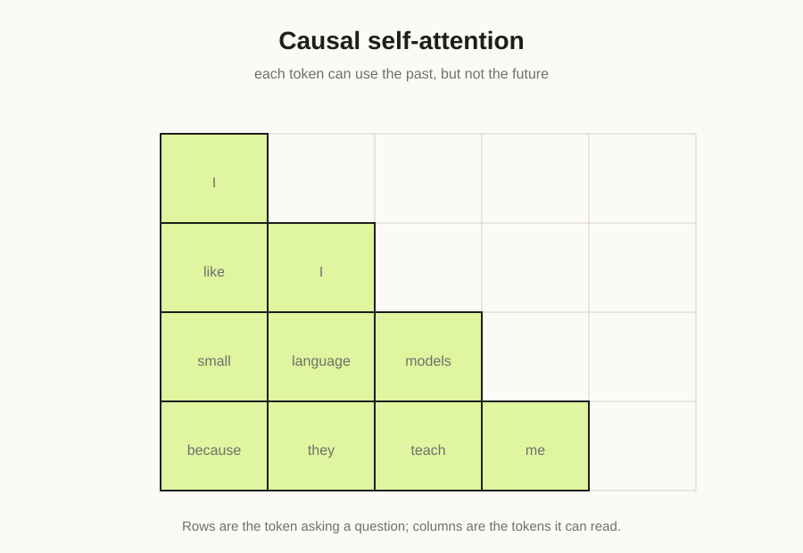

LLM FROM SCRATCH · 04 · SELF-ATTENTION · 20 MIN READ
Self-attention is a learned routing system.
Instead of carrying one fixed summary of a sentence, each token can ask: which earlier tokens should I read, and how strongly?

The formula
Scaled dot-product attention is commonly written:
Attention(Q, K, V) = softmax(QKᵀ / √dₖ) VQ means queries, K means keys, and V means values. A query represents what a token is looking for. A key represents what a token offers for matching. A value is the information that actually gets mixed into the output.
Start with one head
Let x have shape (B, T, C). We project it three ways:
q = Wq(x)
k = Wk(x)
v = Wv(x)For each pair of positions, take a dot product between a query and a key. Large values mean strong compatibility. Divide by the square root of the head dimension to keep logits from growing too large as the dimension increases.
scores = q @ k.transpose(-2, -1)
scores = scores / math.sqrt(head_dim)The causal mask
A language model must not see the answer while predicting it. Position 5 can use positions 0–5, but not positions 6 onward. A lower-triangular mask enforces this.
mask = torch.tril(torch.ones(T, T, device=x.device))
scores = scores.masked_fill(mask == 0, float('-inf'))After softmax, masked entries become zero probability.
weights = F.softmax(scores, dim=-1)
out = weights @ vWhy softmax?
Softmax converts arbitrary compatibility scores into non-negative weights that sum to one across the keys. The output is therefore a weighted mixture of value vectors. It is useful to think of this as differentiable information routing.
A complete PyTorch head
class Head(nn.Module):
def __init__(self, n_embd, head_size, block_size):
super().__init__()
self.key = nn.Linear(n_embd, head_size, bias=False)
self.query = nn.Linear(n_embd, head_size, bias=False)
self.value = nn.Linear(n_embd, head_size, bias=False)
self.register_buffer("tril", torch.tril(torch.ones(block_size, block_size)))
def forward(self, x):
B, T, C = x.shape
k = self.key(x)
q = self.query(x)
weights = q @ k.transpose(-2, -1) * C ** -0.5
weights = weights.masked_fill(self.tril[:T, :T] == 0, float('-inf'))
weights = F.softmax(weights, dim=-1)
v = self.value(x)
return weights @ vWhat attention is not
Attention is not a little database lookup and the weights are not guaranteed to be human-readable explanations. They are learned computational routing coefficients. Some heads can develop patterns that correlate with syntax or copying, but interpreting attention requires care.
If x is (B,T,C) and a head has size H, then q, k and v are (B,T,H). The score matrix is (B,T,T): every query position scores every key position.
Why the quadratic cost matters
The T-by-T attention matrix grows quadratically with sequence length. Doubling context length can require roughly four times as many pairwise scores. This is one reason long-context efficiency is an active engineering problem.
Next
One head can learn one routing pattern. Modern Transformers use many heads in parallel, then combine their outputs.